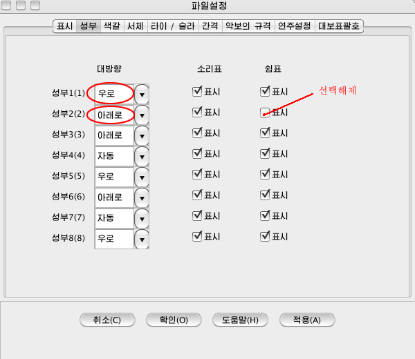

물음과 대답\서로 다른 성부의 소리표를 편집하려면
이 프로그람에서는 1개의 악보표에 최대8개의 성부를 기보할수 있습니다.

- 먼저 입력하려는 서로 다른 성부의 소리표, 쉼표들에
대한 표시설정을 진행합니다. 례하면 <설정\파일설정\성부>판에서 1성부의 소리표대방향은 우로, 2성부는 아래로, 1성부의 쉼표는 표시, 2성부의 쉼표는 비표시로 합니다.

- 조종띠의 성부설정단추를 <모두>로부터 1성부로 바꿉니다.

- 입력하려는 소리표들가운데서 소리표대의 방향이 우로 향한 소리표를 입력합니다.

- 조종띠의 성부설정단추를 <1성부>로부터 2성부로 바꿉니다. 이때 1성부의 소리표들은 비활동성부로 표시됩니다.
- 소리표대의 방향이 아래로 향한 소리표들을 입력합니다.

- 성부설정단추를 다시 <모두>로 합니다. 그러면
1성부와 2성부의 소리표들이 모두 악보표에 표시됩니다.